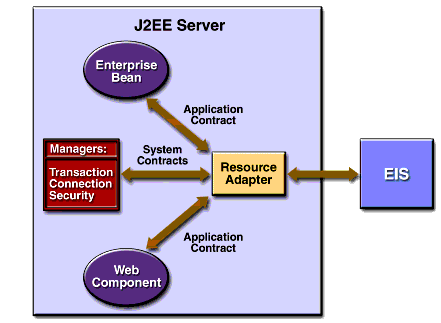
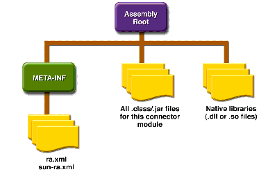

About Resource Adapters
A resource adapter is a J2EE component that implements the J2EE Connector architecture for a specific EIS. As illustrated in Figure D-1, it is through the resource adapter that a J2EE application and an EIS communicate with each other.

Figure D-1 Resource Adapter Contracts
Stored in a Resource Adapter Archive (RAR) file, a resource adapter can be deployed on any J2EE server, much like the EAR file of a J2EE application. An RAR file may be contained in an EAR file, or it may exist as a separate file. See Figure D-2 for the structure of a resource adapter module.

Figure D-2 Resource Adapter Module Structure
A resource adapter is analogous to a JDBC driver. Both provide a standard API through which an application can access a resource that is outside the J2EE server. For a resource adapter, the outside resource is an EIS; for a JDBC driver, it is a DBMS. Resource adapters and JDBC drivers are rarely created by application developers. In most cases, both types of software are built by vendors that sell products such as tools, servers, or integration software.
All of the material in The J2EE(TM) 1.4 Tutorial is copyright-protected and may not be published in other works without express written permission from Sun Microsystems.